Hexway · AppSec-платформа
Редизайн сайта и визуальная поддержка AppSec-платформы
Переработала страницу продукта Hexway Vampy: новая структура, больше информации о продукте и редизайн в рамках нового брендинга. Параллельно вела соцсети, презентации, мерч и раздатку. Итог: +65% установок, ×2,5 посещаемость сайта и 16 новых клиентов.
Hexway Vampy — on-prem ASPM / ASOC решение для ускорения обработки результатов сканирования анализаторов SAST, DAST, SCA, IAST, дедупликации для упрощения триажа и исправления кода.
Есть двусторонняя синхронизация с таск-трекерами и множество других полезных функций для контроля, оценки и анализа безопасности продуктов.
Что нужно было сделать
- 01Редизайн страниц в рамках существующего сайта
- 02Сопровождение соцсетей
- 03Вёрстка презентаций и отчётностей для внутреннего пользования
- 04Дизайн мерча и раздаточных материалов
Соцсети, мерч и выставки
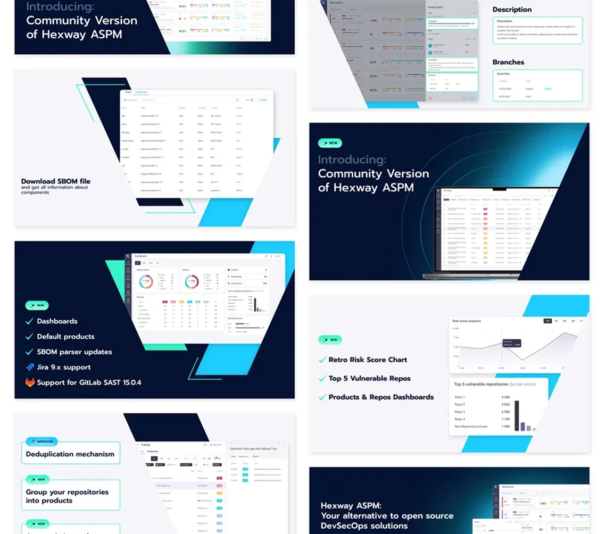
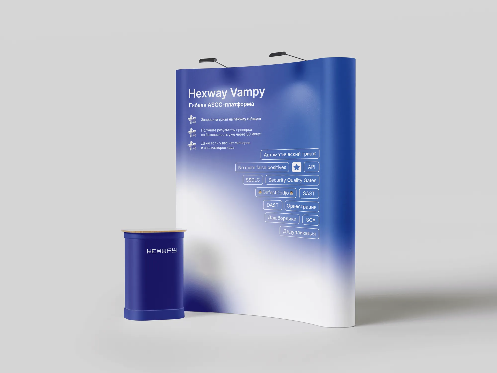
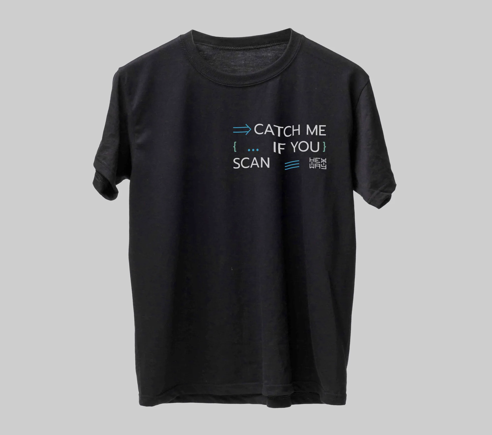
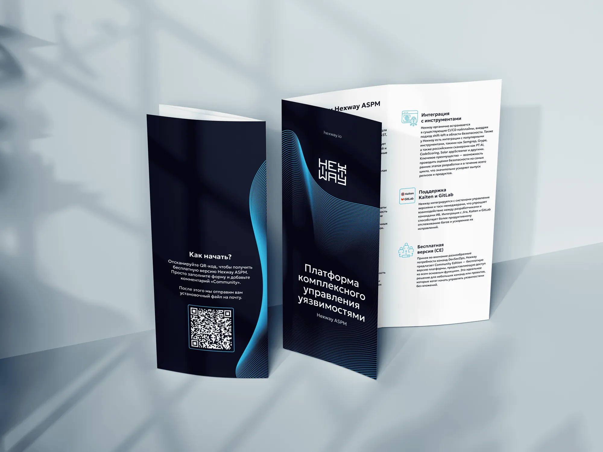

Почему страницу продукта пришлось пересобрать
Проблемы
- Структура страницы отличалась от другого продукта компании и была больше похожа на лендинг
- Некорректная работа анимации, завязанной на прокрутке страницы
- Недостаточно информации о продукте
Решения
- Реорганизовать структуру страницы, добавить новые экраны для лучшего погружения клиента в работу продукта
- Отказаться от анимации в пользу оптимизации страницы
- Показать технологичность продукта, его фичи и преимущества относительно конкурентов
- Сделать редизайн в рамках нового брендинга и отследить отклик аудитории
Начали с изучения рынка
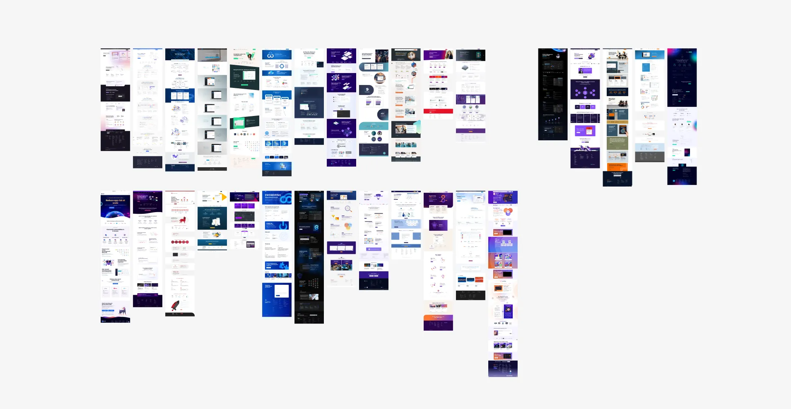
Первым шагом был анализ конкурентов. Маркетолог предоставил список прямых конкурентов, поэтому в анализе участвовали как они, так и косвенные.
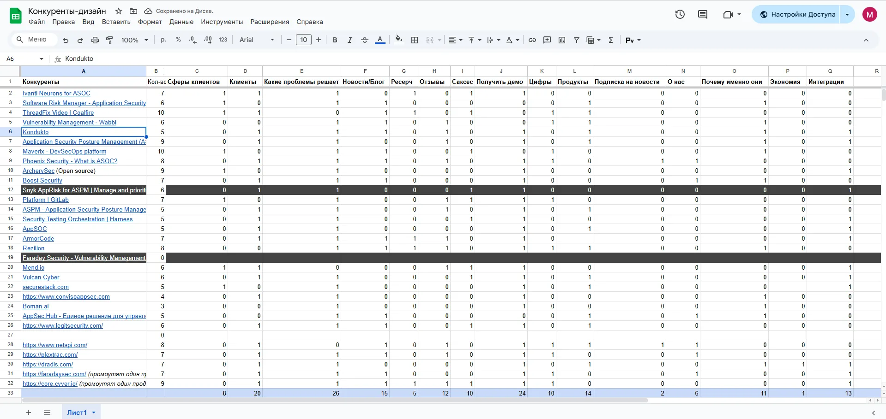
Выводы: обобщили и взяли на вооружение успешные практики конкурентов.
- 01Акцент на технологичный имидж, который привлекателен для IT-специалистов
- 02Среднее количество экранов на страницу и темы, которые они охватывают
- 03Последовательный и плавный сторителлинг без вывода пользователя на сторонние ресурсы
- 04Консистентность как в элементах сайта, так и в tone of voice бренда
От первого экрана к UI-kit
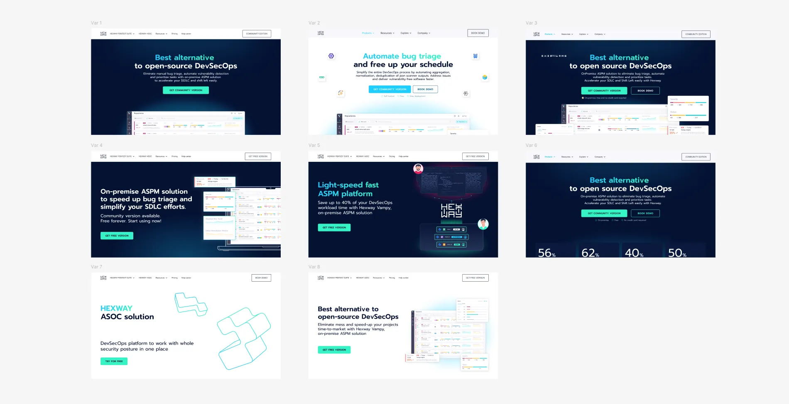
Изначально были предложены варианты первого экрана.
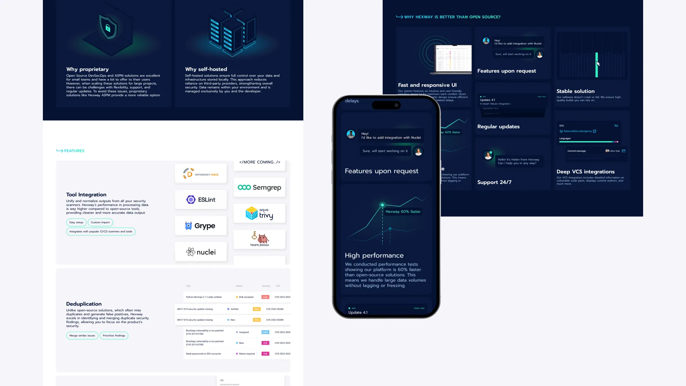
Дальше, оттолкнувшись от выбранной стилистики, началась работа над структурой. Решили добавить больше информации о принципах работы продукта, раскрыть фичи, которых нет у конкурентов, и показать скриншоты платформы вне демо.
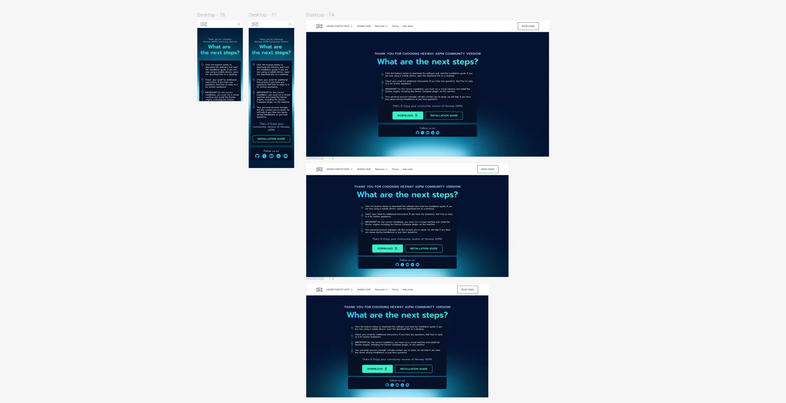
Добавлена страница загрузки демо после заполнения формы.
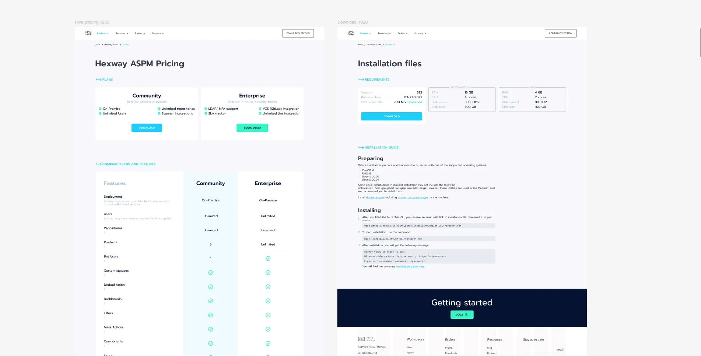
Добавлены страницы прайсинга и технических требований программы.
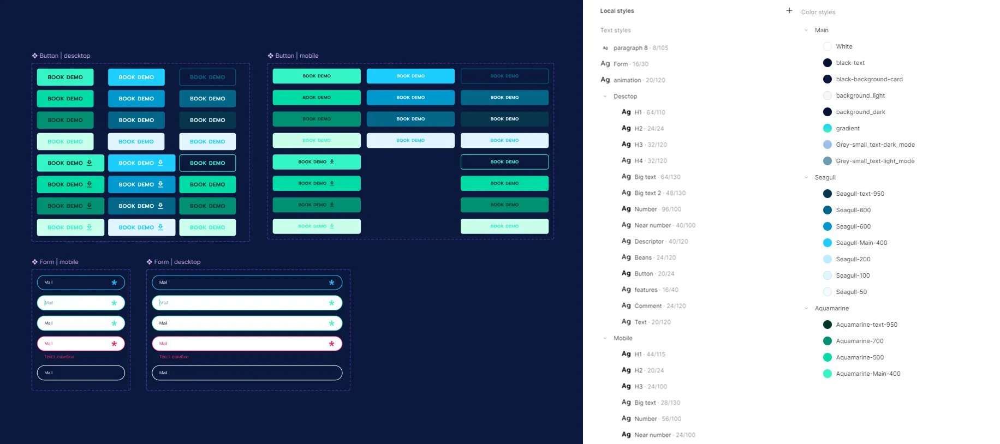
Составили минимальный UI-kit для разработчика.
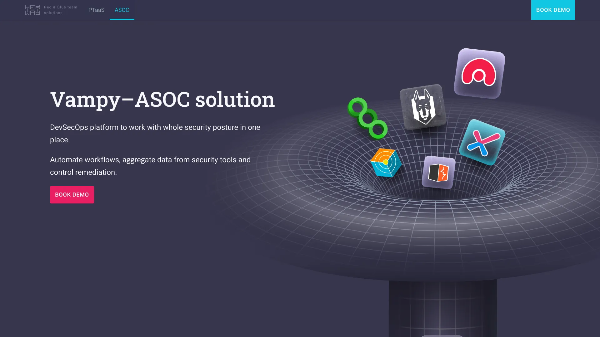
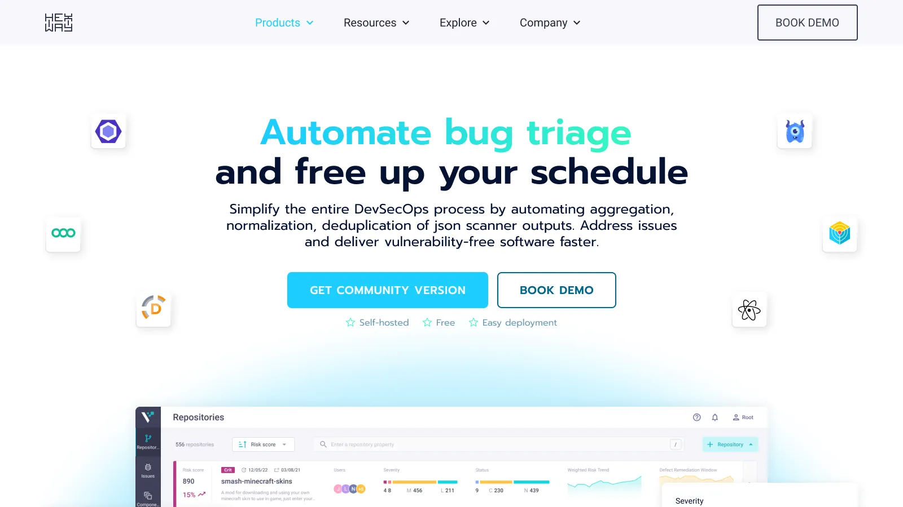
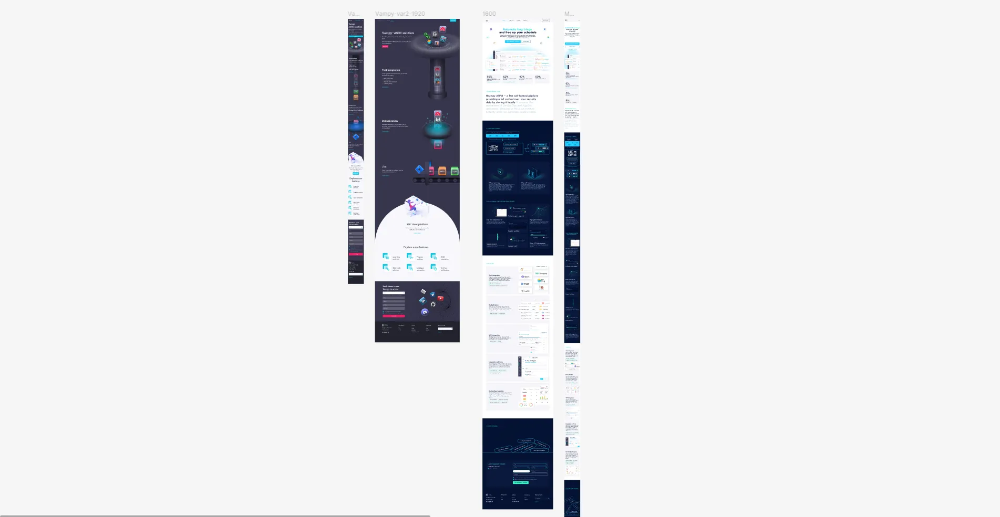
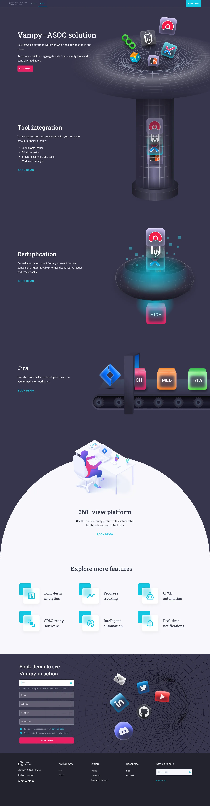
Второй продукт — новая стилистика
После удачной работы над одним продуктом маркетолог решила сделать посадочный лендинг для второго. Решили протестировать другую стилистику страницы, чтобы в будущем выбрать одно направление.